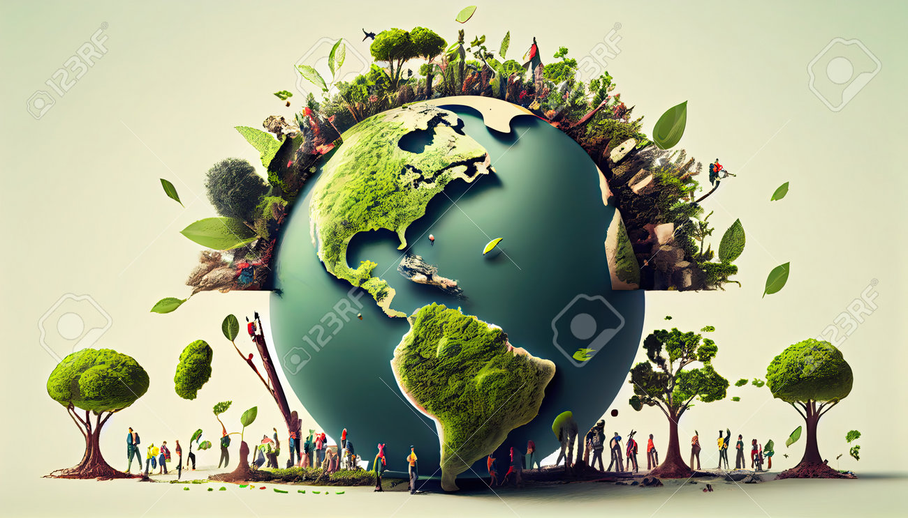
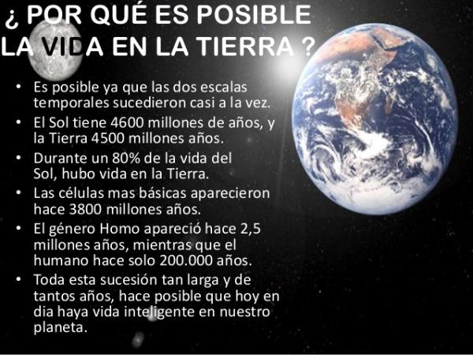

Nuestro planeta Tierra es un lugar verdaderamente asombroso y único en el vasto universo. Su importancia radica en ser el único mundo conocido que alberga vida. La Tierra es el hogar de innumerables formas de vida, desde microorganismos hasta plantas, animales y, por supuesto, los seres humanos. Proporciona un entorno ideal con agua, aire y temperaturas adecuadas para sostener esta diversidad biológica.

La Tierra también es fundamental para nuestro bienestar, ya que nos brinda recursos esenciales, como alimentos, agua, aire limpio y materiales para construir nuestras casas. Además, su variada geografía, con montañas, océanos, bosques y desiertos, ofrece hábitats únicos para las especies y oportunidades para la exploración y el descubrimiento.
La Tierra un Planeta con biodiversidad
La biodiversidad de la Tierra se refiere a la increíble variedad de plantas, animales y microorganismos que viven en nuestro planeta. Cada criatura, grande o pequeña, desempeña un papel importante en mantener el equilibrio de la naturaleza. Proteger esta diversidad es esencial para garantizar un mundo saludable y hermoso para todos.

La Vida en la Tierra
La vida en la Tierra es un emocionante misterio. Desde las profundidades del océano hasta los bosques y desiertos, una asombrosa variedad de plantas y animales coexisten. Cada criatura tiene su propio papel en este gran escenario, creando un mundo maravilloso y diverso que exploramos y cuidamos juntos.

¿Por qué es posible la vida en la Tierra?

La Tierra también juega un papel crucial en la regulación del clima y las estaciones, lo que influye en la agricultura y la vida cotidiana. Su conservación y cuidado son vitales para garantizar un futuro sostenible para las generaciones venideras. A través de la comprensión y el respeto por nuestro planeta, podemos contribuir a preservar su belleza y biodiversidad, haciendo de la Tierra un lugar aún más especial y habitable.
El oxígeno y el agua son esenciales para la vida en la Tierra. El oxígeno, presente en el aire, es vital para la respiración de plantas y animales. El agua, que cubre la mayor parte del planeta, es la fuente de vida, proporcionando hábitats y sustento para diversas especies. Ambos elementos son fundamentales para mantener la biodiversidad y el equilibrio en nuestro planeta.
Lectura facilitada
Planeta Tierra: Nuestro hogar en el espacio, donde vivimos.
Diversidad: La variedad de cosas, como plantas y animales, en la Tierra.
Equilibrio: Mantener las cosas en armonía y funcionando bien.
Recursos: Cosas que usamos de la Tierra, como agua, comida y madera.
Clima: El tipo de tiempo que tenemos en diferentes momentos y lugares.
Agricultura: Cultivar plantas para obtener alimentos.
Exploración: Aprender sobre lugares nuevos y emocionantes en la Tierra.
Biodiversidad: La gran cantidad de diferentes seres vivos en nuestro planeta.
Preservar: Cuidar y proteger para que las cosas sigan siendo hermosas y saludables.
Vida: Todas las plantas y animales que habitan en la Tierra.
Misterio: Algo emocionante que aún no entendemos completamente.
Océano: Enormes masas de agua salada que cubren la mayor parte de la Tierra.
Bosques: Lugares con muchos árboles y vegetación.
Desiertos: Regiones áridas con poca agua y plantas.
Variedad: Diferentes tipos de plantas y animales.
Escenario: El lugar donde ocurren todas las cosas emocionantes y misteriosas en la Tierra.